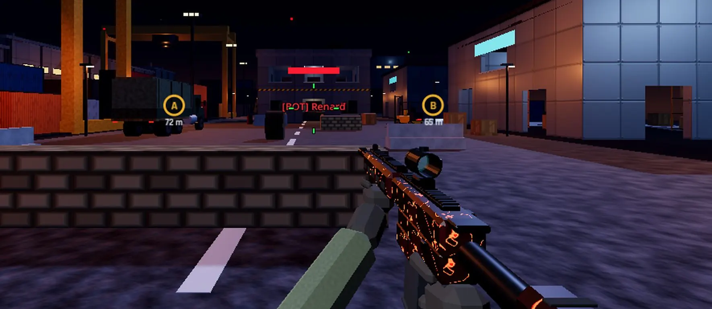
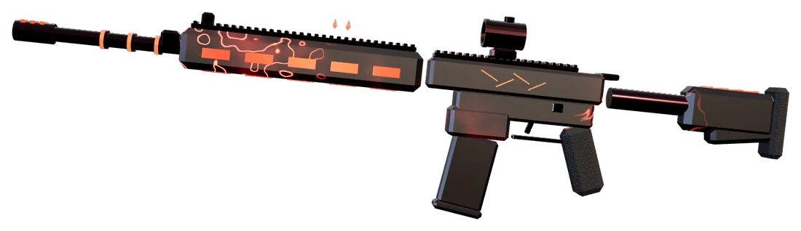

Match à mort par équipe
Alpha contre Bravo, réapparitions
Atteignez l'objectif d'éliminations avant l'autre équipe, ou menez au score à la fin du temps.

Le FPS entre potes. Héberge une partie en un clic, en réseau local ou par Internet, et règle tes comptes en match à mort, en mêlée ou au désamorçage.
Choisis le mode, la carte et le nombre de bots. Tes potes voient ta partie apparaître dans leur liste et te rejoignent, même en cours de route.
Atteignez l'objectif d'éliminations avant l'autre équipe, ou menez au score à la fin du temps.
Pas d'alliés, pas d'excuses. Le premier à l'objectif gagne, le podium touche une prime.
Pose la bombe sur A ou B, ou désamorce-la à temps. Une seule vie par manche, mi-temps à 12.
Du pistolet de départ au fusil de précision, chaque arme a ses forces. Et les skins se paient avec l'argent gagné en partie : pas besoin de sortir ta carte bancaire.

Collections de skins avec couteau et finisher, soldat personnalisable, emotes, quêtes et mode classé avec placements.
Par défaut la carte est tirée au sort à chaque partie, jamais deux fois de suite la même. L'hôte peut aussi en imposer une.
 Crépuscule
CrépusculeRuelles méditerranéennes au coucher du soleil.
 Nuit
NuitDocks, conteneurs et grues sous les projecteurs.
 Neige
NeigeBase scientifique isolée dans le blizzard.
Chaque version s'installe toute seule au lancement. Voir tout l'historique.
Armes entièrement remodelées
Réseau plus fluide
Zone Rouge arrive sur Mac
Gratuit, sans compte, et mis à jour tout seul. Tes potes Windows, Mac et Linux jouent dans les mêmes parties.